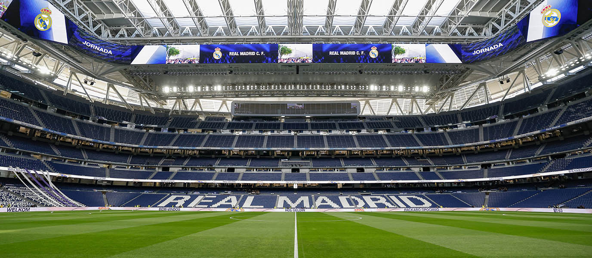

O clube mais vitorioso da história do futebol europeu
A GLORIOSA HISTÓRIA DO REAL MADRID
Atualizado em maio de 2025
O Real Madrid foi fundado em 1902 como Madrid Football Club. Em 1920, o clube recebeu o título de "Real" (Real significa "Real" em espanhol) pelo Rei Alfonso XIII, adicionando a coroa real ao seu emblema.
A verdadeira ascensão internacional do clube começou na década de 1950, com a chegada do lendário Alfredo Di Stéfano. O Real Madrid conquistou as cinco primeiras edições da Copa dos Campeões Europeus (atual UEFA Champions League) de 1956 a 1960. Essa equipe, que incluía estrelas como Ferenc Puskás, Raymond Kopa e Francisco Gento, é frequentemente considerada um dos maiores times de todos os tempos.
Nas décadas seguintes, o clube continuou a atrair as maiores estrelas do mundo, como Hugo Sánchez nos anos 80, e estabeleceu a política de contratação dos chamados "Galácticos" nos anos 2000, com jogadores como Luís Figo, Zinedine Zidane, Ronaldo Nazário, David Beckham e, mais tarde, Cristiano Ronaldo e Karim Benzema.
O Real Madrid é conhecido por sua filosofia de contratar os melhores jogadores do mundo e por seu compromisso com o futebol ofensivo. O clube detém o recorde de títulos da Liga dos Campeões da UEFA, consolidando sua posição como o clube mais bem-sucedido da história do futebol europeu.
CONQUISTAS E TÍTULOS
Até outubro de 2024
O Real Madrid é o clube com mais títulos da Champions League/Copa dos Campeões Europeus na história, tendo conquistado a competição 15 vezes. O clube também conta com inúmeros títulos nacionais e internacionais:
Principais títulos internacionais:
15 UEFA Champions League/Copa dos Campeões Europeus
5 Mundiais de Clubes da FIFA / Copa Intercontinental
5 Supercopas da UEFA
Principais títulos nacionais:
36 Títulos da La Liga (Campeonato Espanhol)
20 Copas do Rei
13 Supercopas da Espanha
Esta impressionante coleção de troféus faz do Real Madrid um dos clubes mais vitoriosos e prestigiados do mundo. O clube madrilenho é conhecido por seu desempenho excepcional nas competições europeias, especialmente na Champions League, onde costuma se sobressair mesmo em temporadas menos dominantes no cenário doméstico.
ELENCO ATUAL E ESTRELAS
Temporada 2024/2025
O Real Madrid continua sua tradição de reunir alguns dos melhores jogadores do mundo. O elenco atual é uma mistura de estrelas estabelecidas e jovens talentos promissores.
Entre os principais nomes do atual elenco estão Vinícius Júnior, um dos melhores atacantes do mundo, e o meio-campista inglês Jude Bellingham, que se tornou uma sensação imediata após sua chegada ao clube. O jovem atacante Kylian Mbappé, sonho antigo da torcida madridista, finalmente se juntou ao clube em 2024.
O brasileiro Rodrygo também continua sendo uma peça fundamental no ataque madrilenho, enquanto a defesa conta com a solidez de jogadores experientes e jovens promessas.
O Real Madrid é conhecido por sua política de contratar os maiores talentos do futebol mundial, mantendo sua posição como um dos destinos mais desejados pelos jogadores de elite.
SANTIAGO BERNABÉU: A CASA MERENGUE
Renovado em 2023

O Estádio Santiago Bernabéu é a casa do Real Madrid desde sua inauguração em 1947. Nomeado em homenagem a Santiago Bernabéu, um dos presidentes mais importantes da história do clube, o estádio é um dos templos mais famosos do futebol mundial.
Recentemente, o Santiago Bernabéu passou por uma extensa renovação, tornando-se um dos estádios mais modernos e tecnologicamente avançados do mundo. A reforma incluiu um teto retrátil, uma fachada envolvente de 360 graus e um sistema que permite que o gramado seja armazenado subterraneamente para preservá-lo enquanto outros eventos são realizados no estádio.
Com capacidade para aproximadamente 81.000 espectadores, o Bernabéu é famoso por sua atmosfera intimidadora para os times visitantes e por ser palco de algumas das maiores remontadas (viradas) da história do futebol europeu.
O estádio também abriga o museu do clube, um dos mais visitados da Espanha, que exibe os inúmeros troféus conquistados pelo Real Madrid ao longo de sua história centenária.